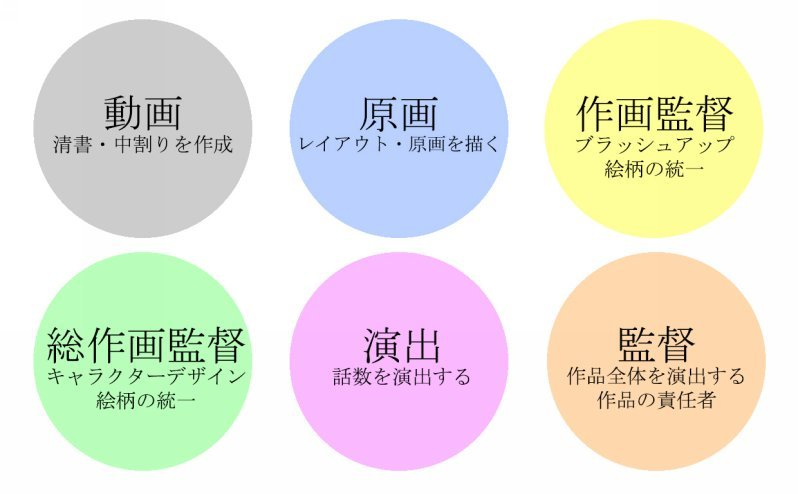
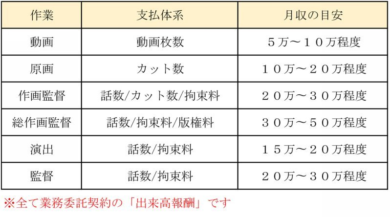
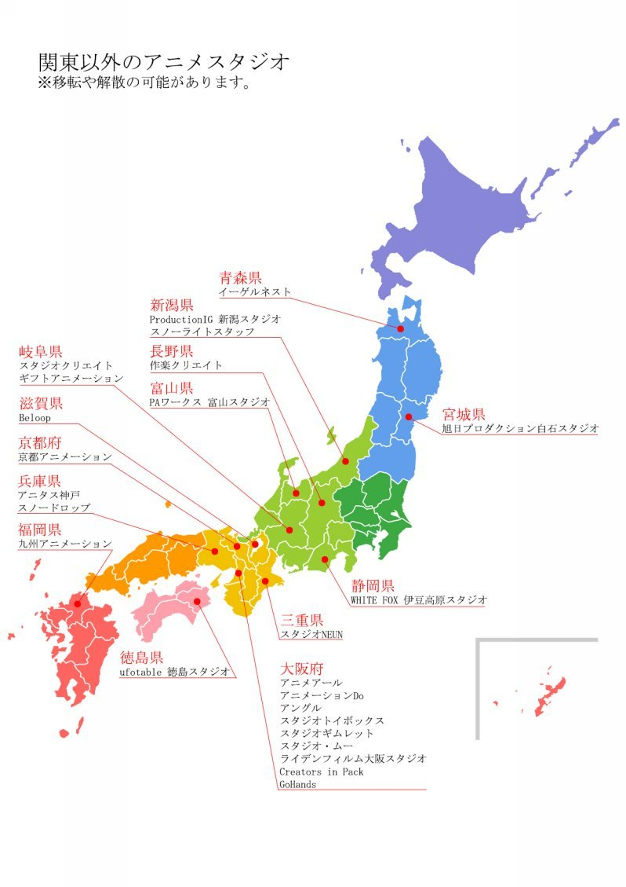

| アニメーターの成り方 | |
| y_skywalker | |
| (2018) | |
はじめに
近年、アニメ業界は大変な盛り上がりをみせており、アニメーターという職業は大きな注目を集めるようになりました。
この本を手に取って頂いたあなたも、きっと憧れのアニメ作品があって、そんなアニメを作りたいという想いを持っているのでしょう。
「アニメーターになって、大好きな作品に携わりたい！」、「大ヒットするような魅力的な作品を制作したい！」、そんな夢を叶える手助けが出来ればと思い、執筆しました。
あなたの夢が叶う、キッカケの本になれば幸いです。
目次
Chapter1 まずは、アニメーターを知ろう！
Chapter1-2 動画について
Chapter1-3 原画について
Chapter1-4 作画監督について
Chapter1-5 総作画監督について
Chapter1-6 演出家について
Chapter1-7 監督家について
Chapter2 アニメーターの仕事のスタイルを知ろう！
Chapter3 アニメーターのここが面白い！
Chapter4 アニメーターの成り方
Chapter5 スタジオの違いを確認しよう！
Chapter6 スタジオに採用に応募しよう！
Chapter7 アニメーターに必要な画力とスキル
Chapter8 上京しなくともアニメーターには成れる！
Chapter9 自宅作業でもアニメーターになれる！
Chapter10 独学でもアニメーターになれる！
Chapter11 学生時代（就職前）にやっておくこと
Chapter12 最初の一歩を踏み出そう！
Chapter13 アニメーターの闇を知る！
Chapter14 業界を取り巻く環境を知る！
Chapter15 この業界で生き残る！
Chapter16 業界用語解説
Chapter1 まずは、アニメーターを知ろう！
まずは、「アニメーター」という職業について知っていきましょう。
アニメーターとは、アニメーション制作工程において、作画作業を担当する人のことを指します。
動画や原画と呼ばれる作業を中心に、それを修正する作画監督や総作画監督、作品や話数を演出する、演出や監督といった役職があり、それらの人たちを総称して「アニメーター」と呼びます。

それぞれ役割がありますが、作画監督や演出などは、経験と技術が必要な役職の為、キャリアップの一つとして考えておきましょう。
どんなに絵が上手な方でも、最初は動画を担当することになります。
なので、皆さんが制作スタジオに就職を考えているのであれば、「動画作業者」に応募することになることを覚えておきましょう。
○アニメーターの雇用について
アニメーターを目指す前に、必ず知っておかなければならないことがあります。
それは、殆どのアニメーターが、「業務委託契約」で働いており、給料が出来高報酬で支払われるということです。カットや枚数ごとに単価が設定されていて、その成果に応じて報酬が支払われる仕組みです。

「スタジオに就職する」といっても、「席を借りている」程度の契約です。有給休暇なんてありません。全ては「自己責任」で仕事をし、会社からのサポートはありません。
アニメ業界外から就職を考えている方は、その点に注意しましょう。
では、それぞれの役職がどんな作業をして、役割を担っているのかを詳しくみていきます。
Chapter1-2 動画について
この作業を担当するアニメーターは、通称「動画マン」と呼ばれます。
特別な例を除けば、ほぼ全てのアニメーターは動画を経験することになります。
これからアニメーターになる皆さんにとっては、最低限知っておかなければならない役職です。
では、動画とは実際にはどんな作業をするのでしょうか？
動画とは、原画を清書し、タイムシートの指示に沿って原画の動きの間を割っていく作業です。つまり、実際にアニメーションとして動いて見えるようにする作業です。
原画を正確にトレスする技術やキャラクターの動かし方などの基本を経験する為に、この役職がアニメーターの「入り口」とされています。
業界内では、「修行中」という立場で扱われ、賃金も非常に安く設定されていますが、アニメーション制作においては、必要不可欠な作業の一つです。
○動画の報酬について
動画の報酬は、作業した「枚数」で支払われます。
１枚200円〜250円程度で大変低い金額になっています。
新人が１ヶ月で作業できる枚数は200枚程度、2〜3年程度の経験を積んでも500枚〜700枚程度の為、就職して2〜3年は最大でも１０万程度の収入となってしまいます。
スタジオや作品によって多少ばらつきはありますが、動画マンでいるうちは、まともな給料が入らないことを覚悟しておきましょう。
○作品に対する影響力
・描いた動画の絵が映像になる！
作画においては最終工程の為、動画作業者が描いた絵が映像になります。
原画のトレスや中割りが正確で自然に描かれているかどうかで、視聴者に与える印象が大きく異なります。
非常に低い待遇での作業になりますが、決して影響力が低い訳ではありません。
よくある質問
：動画検査って何ですか？
動画の中でも、「動画検査」と呼ばれる担当の役職があります。
これは、動画マンの成果物をチェックし、必要であれば修正する人です。
ベテランのアニメーターが担当する場合も多いですが、比較的若手のアニメーターが担当する場合もあります。
よくある質問
：動画を経験しないアニメーターっているの？
スタジオによっては、人員不足を理由に最初から原画を担当させることもあるようです。
しかし、原画を描くにも動画の経験は必要の為、動画経験を積まないアニメーターは、将来的に行き詰まることになる可能性が高いと言われています。
Chapter1-3 原画について
この作業を担当するアニメーターは、通称「原画マン」と呼ばれます。
動画マンが2〜3年程のキャリアを積んでから担当する役職で、「レイアウト」と「原画」を描きます。
レイアウトとは、絵コンテを元に背景やキャラクターの配置などが描かれた「カットの構成図」です。
原画とはキャラクターの動きのキーになるポイントを描く作業です。
作品のシチュエーションに合わせて、自然な動きを再現することや、魅力的な芝居を考えます。そして、動きのタイミングや背景とのバランスを考えながら、原画を描きます。
どちらの作業も高い画力や空間把握能力、創作能力が必要になる為、一気にクリエーターらしくなります。
恐らく、皆さんが想像する「アニメーター」と呼ばれる職業は、この作業が最もイメージに近いと思います。
この原画を数年経験することで、ようやく一人前の「アニメーター」として認められます。
○原画の報酬について
原画の報酬は、カット単位で支払われます。
１カットあたり、5000円〜6000円程度が相場です。慣れてくれば１ヶ月で50カット程はこなせるようになるので、20万程度稼げるようになります。
ただし、スケジュールの都合によっては、清書作業を別のアニメーターにお願いしなければならないケースもある為、バラつきが出ます。
Chapter1-4 作画監督について
略して作監（さっかん）と呼ばれます。
担当話数の作画における責任者で、原画マンが上げた成果物をチェックします。
アニメ制作においては、複数人の原画マンで分業する為、絵柄の違いを統一し、品質をブラッシュアップする役割を担っています。
レイアウトや原画、タイミング等も細かくチェックする為、経験豊富で高い技術を持ったアニメーターが担当するのが一般的です。
修正が必要な場合は、消しゴムで消すのでは無く、修正用紙と呼ばれる着色された紙で上から被せて描きます。
修正のみを行う作画監督もいますが、原画も描く作画監督も多いです。珍しい例ではありますが、作画監督が一人で全ての原画を描くこともあります。
高い技術力と経験を必要とする為、適任者も多くありません。
その為、この役職は常に人不足状態になっています。
○作画監督の報酬について
１名で話数を担当する場合は、話数単位で単価が支払われます。また、複数人で分業を行う場合は、カット単位で報酬が支払われます。
話数単位では、30万〜40万程度。カット単価では、1000円〜2000円程度が相場です。
また、非常に負担の高い役職であることや人材の確保の理由から、「拘束料」と呼ばれるシステムを導入するスタジオが多くなってきています。
拘束料とは、一定の金額を月額で支払うことで、アニメーターの生活の安定化や人材の囲い込みをする契約です。
拘束料については、スタジオや作品によって契約が異なることが多いので、一概には言えませんが、毎月10万〜40万程度の報酬を受け取ることができます。場合によっては、拘束料＋出来高報酬のような複合した契約もあります。
○作品に対する影響力
映像における根本的なクオリティーアップを担っている為、作品に対する影響力は非常に大きいと言えるでしょう。
キャラクターの芝居や表情、画面設計などは作画監督の修正次第で大きく変わります。非常に高い技術を持った、有名アニメーターが担当する話数は、とても見応えがあります。
一方で、作画監督がきちんと仕事をしなかったり、スケジュールの破綻によって実力が発揮出来なかった場合は、「作画崩壊」してしまうことが多くなります。
よくある質問
：アクション作監って何だろう？
アクションカットのみを専門として、修正を担当する人のことで、負担の分散化や得意分野を考慮した人員配置です。
この他にも、エフェクト作監やモンスター作監などがあります。
Chapter1-5 総作画監督について
作画監督のさらに上位互換、作品全体を通して絵柄の統一性を担当する人です。
略して総作監（そうさっかん）と呼ばれ、作品全てのカットをチェックするだけでなく、キャラクターデザインを兼任することが多いです。
作監が作業したカットの上からさに修正を入れて、各話数ごとの絵柄のばらつきを作品全体通して統一します。また、重要なカットのキャラクターの表情をより魅力的なものにブラッシュアップするなど、作品全体のクオリティアップを担っています。
また、「版権」と呼ばれる作業も担当することも多いです。
版権とは、雑誌掲載やビデオグラム、グッズ商品などのデザインを描き起こす作業です。
デザインを作成する為の創造力や画力、スピードが求められる為、この役職を任せられるようになれれば、アニメーターとしては、トップレベルと言っても過言ではないでしょう。
一方で、総作監に掛かる負担は非常に高く、しばしばスケジュール遅延の原因になってしまう傾向にあります。
○総作監の報酬について
カット単位で算出されることは少なく、話数単位や拘束料での支払いが一般的です。
話数単位では30万〜40万程度、拘束料は30万〜40万程度と作監よりもさらに待遇が良くなります。
また、デザイン料として１キャラクターにつき5万〜10万程度加算されます。
さらに、版権作業が収入を押し上げます。
版権作業は、1点2万〜10万と高額で、月に4〜5点ほど作業すれば、10万以上の収入となります。
作品がヒットすれば、TV放送終了後も依頼が継続し、安定した収入源を得ることも可能になります。
この総作監で活躍することで、年収1000万に到達する方も少なくなく、アニメーターであれば、誰もが憧れる役職です。
○作品に対する影響力
キャラクターデザインから携わることが多いので、作品に対する影響力は非常に大きいと言えるでしょう。
キャラクターの可愛さや格好良さを魅力的に表現することができれば、大変大きな注目を集める作品になるかもしれません。
また、版権で作業したデザインは商品化やプロモーションなどで幅広く使用されます。作業の成果が商品という形で残り、多くの人に手にとって見てもらえることができます。
Chapter1-6 演出家について
演出家は、担当話数の絵コンテを映像化する為に、各スタッフに指示を出すことやより魅力的な映像になるように演出プランを構築する人です。
監督と綿密に打ち合わせをし、映像構成や処理、演出プランを構築していきます。
監督と擦り合わせた演出プランを作画監督や原画マンに説明し、映像が監督の意向に沿ったものになるように構築していきます。
また、実際に上がってきたレイアウトや原画をチェックし、タイミングや動き、カット間の繋がりを調整していきます。場合によっては、作監宛に指示を出し、絵を修正してもらうこともあります。
この他にも、色味や背景、撮影処理の発注打ちだけではだけでなく、編集や音響にも立ち会い、必要な指示を出すのが仕事です。
演出家自身が絵コンテを描くことも多く、中には絵コンテ作業のみを専業とする人も珍しくはありません。そう言った人たちは「コンテマン」と呼ばれます。
原画や作監などと比較すると、画力はそこまで必要ないのも特徴の一つです。
○演出家の報酬について
話数単位か拘束料で報酬が支払われるのが一般的です。
話数単位では、20万〜30万程度、拘束料としても同様の金額が平均的で、絵コンテを描いた場合は、1本20万〜30万程度の報酬を受け取れます。
話数単位での報酬の場合、話数が完成するまでに3ヶ月程度はかかる為、1ヶ月の報酬としては、低い金額となってしまっています。
その為、多くの演出家は2〜3本程度の作品を掛け持ちするか、絵コンテ作業と兼業しながら生計を立てています。
○作品に対する影響力
作画に関わる事だけでなく、画面設計や編集、音響にも携わる為、映像には演出家の力量が大きく反映されます。
担当話数に限定された演出になりますが、視聴者の「面白い」「ドキドキする」と言った感情を引き出せるかは、演出家の技量次第です。
絵コンテと兼業した場合は、映像の根本に関わることができる為、将来的に監督になりたい方が目指す役職です。
よくある質問
：制作進行から演出になる人もいると聞きました！
演出家への道は、アニメーターだけでは無く、制作進行から転向するケースも非常に多いです。
作画から転向するには、原画を経験してから。制作から転向するには「演出助手」を経験してから転向することが一般的です。
Chapter1-7 監督家について
監督については、既にご存知の方も多いでしょう。
皆さんのイメージ通り、映像作品を構築し、その内容について責任を持つ人です。
色味や背景、撮影処理などの画面設計や各話数の絵コンテチェック、演出プランの構築をしていきます。また、映像だけでなく脚本や音響作業にも監督の意向が強く反映される為、作品の根本から携わる役職です。
TVシリーズだけはなく、劇場作品を手懸ける監督も多い為、一般的に見ても憧れの職業として挙げられることが多いようです。
一つの作品を手懸けるやりがいは絶大な反面、制作期間中は非常に多忙を極めます。終日、打ち合わせが入っていたり、各スタッフから上がってくる成果物のチェックの為に不眠不休で働くこともあります。
○監督の報酬について
TVシリーズの場合、話数単位で報酬が支払われるケースか拘束料として報酬が支払われるケースが一般的です。
話数単位では、20万〜30万程度、拘束料としても同様の金額が平均的で、絵コンテを描いた場合は、１本20万〜30万程度と、演出とあまり変わりません。しかし、全話数分の請求をすることが出来ることや、準備金といった報酬が支払われることもあることから、演出よりは生活が安定します。
劇場作品の場合は、ケースバイケースです。
非常に著名なアニメ監督となると、相当な報酬が支払われていると思われます。
○作品に対する影響力
作品の根本から携わることや、意思決定の責任を持つ為、監督自身の思想や作風、演出プランが作品に大きく反映されます。
制作した作品は、「監督の作品」と言える程、影響力が大きい存在です。
Chapter2 アニメーターの仕事のスタイルを知ろう！
前章で、なんとなくアニメーターの仕事については理解して頂けたかと思います。やりたいビジョンが明確になった方もいるでしょう。
今度は、アニメーターがどんなスタイルで仕事をしているのかを紹介します。
フリーランスといこともあり、一般的な企業勤めとは、全く認識が異なりますので、注意しましよう。
○平均的な勤務日数について
基本的には、月〜土までの週6日勤務だと考えて下さい。
フリーランスなので、強制ではありませんが、週6勤務で想定しておかないと、稼げませんし、仕事が締め切りに終わりません。
特に、新人の場合は、日曜まで返上して作業するくらいの覚悟でないと、周りに
ついていけなくなることがあります。
祝日も仕事をするのが多い傾向にあります。しかし、年末年始は大体のアニメーターは休みが取れます。
○どこで仕事をするのか
スタジオに所属する場合は、席を貸してもらえます。
最低限の仕事道具が揃っていることや、教えてくれる先輩もいますので、可能な限りスタジオに入って作業することをおすすめします。
近くにスタジオがない場合や事情がある方は、自宅で作業することもできます。
自宅作業の場合、成果物の回収や資料の受け渡しは、制作進行が家まで来てくれます。
筆者の個人的な見解ですが、スタジオに入って作業している人が7割、自宅作業している人が3割程度のような気がします。
○勤務時間について
ほとんどのアニメーターは昼過ぎくらいから作業を始めます。
一般企業や学校に比べると大分遅いですね。これは、フリーランスなので、明確に勤務時間が決められていないからです。成果さえ上げていれば、何時に出社しても怒られることはありません。
（新人のうちから極端に遅く出社すると、怒られたりもしますが...）
しかし、帰る時間は遅めです。
スケジュールに余裕があれば、24時までには帰宅できますが、納期が近くなってくると深夜2〜3時まで作業することも多いです。
Chapter3 アニメーターのここが面白い！
現役で活躍しているアニメーター達の意見をご紹介します。
様々な意見がありますが、共通の意見をピックアップしました。
○大好きなことが仕事にできる！
アニメーターに聞くと必ず、この答えが１番にきます。
大好きな「絵を描くこと」を仕事に出来るのは、とても幸せなことです。
待遇では厳しい面もありますが、絵を描くことが面白いと思える方は、毎日精力的に仕事をしています。
○描いた絵が映像になる！
自分が描いた絵が、映像として動画になるのは、他の職業には無い達成感があります。苦労して描き上げたアニメーションほど、多くの達成感や充実感を得ることが出来ます。
○作品が形になって残る！
制作した映像は、商品化などによって形に残ります。
EDには氏名がテロップされることもあり、自分の成果として長期間残すことが可能です。
○映像の面白さに直結する！
様々な工夫と苦労をして描き上げた絵は必ず、面白い映像になります。
自身で考えて描いた映像を、視聴者の方に評価してもらえることで、大きな達成感と満足感を得ることが出来できます。
○常にクリエイティブな気持ちで仕事が出来る！
絵は練習すればするほど上手くなりますし、経験値によってさらに技術が磨かれます。
積み上げた技術と経験で、さらに新しい表現に挑戦することも出来る為、常にクリエイティブな気持ちで仕事をすることが出来るでしょう。
Chapter4 アニメーターの成り方
ここまで読み進んで頂いた方は、アニメーターがどんな職業なのか、理解できたかと思います。勤務時間や報酬体系などは、アニメーターならではのシステムで一般的な職業からは、想像しにくい部分が多いですね。しかし、既にご存知のように、とても夢に溢れた魅力的な職業です。
では、アニメーターにはどのようにして成るのか、解説をしていきましょう。
○新卒で就職する
専門学校や美術大学を卒業してアニメーターとして就職する方法です。
毎年、新卒採用を行うスタジオが多いので、そこに募集します。学生の方は、この方法で就職を目指すことになります。
書類審査には、履歴書だけでなく、ポートフォリオの提出が必要になります。また、スタジオによっては、実技試験を行なっているところもありますので、募集要項をよく確認しておきましょう。
専門学校や美術大学に通っていない方も募集できますが、専門学校を出た人と審査条件は変わりません。
○中途採用で就職する
別の業界から就職を考えている人や個人で修行を積んだ人が目指す就職方法です。不定期で募集が行われます。
ただし、現在のアニメ業界は、非常に人不足の為、常に中途採用の募集を行なっているスタジオが多くあります。興味があるスタジオがあれば、HPなどで確認して見ましょう。
また、「募集締め切り」と書いてあっても、電話して見れば、意外と話を聞いてくれることもよくありますので、色々な方法で情報を集めて見ましょう。
Chapter5 スタジオの違いを確認しよう!
小規模なスタジオを含めると、100以上のスタジオが存在します。それぞれ特性が異なり、請けている仕事も大きく異なります。
アニメーターとして就職を考える時には、そのスタジオの特性を知らなければなりません。
概ね三つの種類に分類されるので、自分がやりたいことと照らし合わせながら検討していきましょう。
○制作元請けスタジオ
元請けというのは、作品の制作を請け負う受注元という意味です。
企画会社から依頼された作品の制作に関することに責任を負うことになります。
元請けスタジオに入社するメリットとしては、
・作品全体を通して携われる
・下請けに比べると、比較的報酬が高い
・トップアニメーターが在籍していることも多く、フレキシブルな環境で仕事ができる
・アニメーターの育成にも注力している会社が多い
などが挙げられ、元請けスタジオに就職することが、理想と考える人も多くいます。その反面、競争率も高い傾向にあります。
○下請けスタジオ
元請けスタジオが処理しきれなくなった仕事を請け負います。
主に、「グロス請け」と呼ばれる話数単位での制作や、一部のパートのみを請け負ったりすることが多いです。
・様々な作品に参加することができる
・良くも悪くも厳しい環境で鍛えられる（スケジュールや物量面で）
がメリットとして挙げられますが、スケジュールが悪かったり、報酬が低いことがあります。
○作画スタジオ
いわゆる専門スタジオと呼ばれる形態です。
制作進行などは在籍せず、アニメーターのみで運営されます。また、マンションやアパートの一室などを借りて、小規模に経営されていることが多いです。
下請けスタジオと同様のメリットはありますが、素材の受け渡しや電話対応、スタジオ運営に関わる事務作業もアニメーターで行わなければならないため、デメリットも多くあります。
Chapter6 スタジオに採用に応募しよう!
入りたいスタジオや進路が決まったら、採用に応募しましょう。
事前に必要な資料や募集要項を必ず確認します。
○募集内容について確認しよう
契約形態・報酬・作業内容などは必ず確認しましょう。
アニメーターはフリーランス契約の為、給料は「出来高報酬」とされていることが多いです。
また、提出しなければならない作品集なども、スタジオごとに異なりますので、必ず確認しましょう。
○ポートフォリオを準備する
アニメーターの採用では、必ずポートフォリオの提出が求められます。
書類選考では、非常に重要視されますので、適当なスケッチを提出すれば良い訳ではありません。
ポートフォリオに組み込まなければならないポイントは下記になります。
・レイアウト
原画の説明で記載した「レイアウト」です。
背景だけでなく、キャラクターも載せて描くようにしましょう。
・デッサン
作画における基礎と言われる技術です。
絵だけ載せるのではなく、掛かった時間なども併記しておくと良いでしょう。
・クロッキー
対象を素早く描くことです。
概ね10分程度で描かれたもので、短時間での作画能力があるか審査されます。
様々な姿勢のものを用意するようにしましょう。
・自由模写
アニメーターは、得意不得意に関わらず、様々なものを描けなければなりません。
既存キャラクターの模写や動物、ロボットなど、様々なものを描いて実力をアピールしましょう。
また、個性などをアピールする為に、オリジナルイラストなども描いておくと評価されるかもしれません。
○履歴書を用意する
ポートフォリオの作成に注力しすぎて、履歴書の準備が疎かになってしまわないように注意しましょう。
ポートフォリオに比べると、軽視されがちですが、履歴書もしっかりと審査されます。
志望動機や自己PRなど、企業研究をした上で、書き上げた履歴書は、とても好印象です。
○面接の準備をする
一般企業と同じく、必ず面接があります。
志望動機や自己PRなど、どんな質問が来てもスムーズに答えられるように練習しておきましょう。
学生の場合は、模擬面接をやってくれる学校もあるので、積極的に利用するようにしましょう。
提出したポートフォリオについても、質問されることがありますので、併せて準備しておくことが必要です。
Chapter7 アニメーターに必要な画力とスキル
アニメーターにとって必要なスキルをご紹介します。
どのスキルも教科書や技術書が販売されており、独学での習得が可能です。
○デッサン力
デッサンとは、平面に立体物を描くことです。
１コマ単位でキャラクターが「どう動いたら、どう見えるのか」を把握して描かなければならない為、デッサンに対する理解と練習は必須です。
○パース
レイアウトを描く上で、パースの理解は必須です。
アニメーターに限ったことではありませんが、絵を仕事としている方であれば、必ずパースを学習していると思います。
○スピード
期日内にカットを完成されることや、生計を立てる上で必要な分の成果を上げる為に、必須の技術です。
経験に伴う技術なので、いきなり早くなったりしませんが、早く・正確に描くことを意識して練習する必要があります。
○クリーナップ
鉛筆で綺麗な線を引く技術です。
主に動画作業時に必要なスキルですが、原画や作監修正などの荒い線を補正する為に必要になります。
○アニメに対する情熱
絶対に欠かすことが出来ない「気持ち」の部分。
辛いことも多い仕事ですが、アニメに対する情熱があれば、どんな状況でも乗り越える手助けになるでしょう。
Chapter8 上京しなくともアニメーターには成れる！
ここ数年で、東京以外の地域にスタジオを開設する会社が増えました。
地方の人材を開発することを目的としており、アニメーターを目指す方にとっては、とても追い風となっています。
スタジオによっては、寮制となっていることもあり、東京以外にお住いの方は、検討してみる価値があるでしょう。
・ホワイトフォックス 伊豆高原スタジオ
静岡県の伊豆に開設されたスタジオ。
全寮制の為、生活費の負担がとても低い。また、現役アニメーターも常駐している為、教育面でも充実しているのが特徴。
・PAワークス 富山スタジオ
本社スタジオが富山にあるスタジオ。
こちらも寮がある為、住み込みでの作業が可能になっています。
・ufotable 徳島スタジオ
2000年に設立されたスタジオ。
寮もあり、作業に集中して取り組むことが出来ます。
以上の三つのスタジオは寮設備があり、住み込みで仕事をします。
スタジオ近辺に自然が多いことなどから、スタッフ同士でアウトドアを楽しんだりしてリフレッシュしているようです。
東京以外に拠点を置いているスタジオについては、次ページに載せます。
以外と自分の家の近くにスタジオがあるかもしれません。

Chapter9 自宅作業でもアニメーターになれる！
「家の近くにスタジオが無い・・・」「事情があって自宅で作業したい」という方でもアニメーターを目指すことは可能です。
成果物の提出や資料のやりとりなどは、宅急便で対応してくれます。また、打ち合わせもスカイプや電話などで対応してくれます。
宅急便のやり取りや備品の管理などは、少々面倒くさいですが、自宅での作業も十分可能です。
しかし、教育面や宅急便でのやり取りのコストが見合わないことから、最初から自宅で作業する新人アニメーターは、受け入れられないのが実情です。
大抵の場合は、原画を任せられるようになって、落ち着いた頃に自宅作業に移行するのが一般的です。
Chapter10 独学でもアニメーターになれる！
最低限の技術やあれば、独学でもアニメーターになれます。
教材や教科書などは、どこにでも売っているので、それを見て勉強するのもありでしょう。
専門学校や美術大学に高額の学費を払うくらいなら、独学で勉強した方がいい、と考える人も少なくありません。
また、アニメーターになって数年は、収入が少ない時期が続く為、その為に貯金しておくのも手です。
既に社会人として企業に勤めている方も同様です。
気持ちと努力さえ継続出来れば、独学でアニメーターに成れます。
Chapter11 学生時代（就職前）にやっておくこと
学生時代（就職前）にやっておいた方が良いと思うことを紹介します。
特に、この業界を目指す上では、技術の習得だけでなく、家族の理解は必要になります。
○基礎的な技術を勉強しよう
前述したような、デッサンやパース、クリーナップのような技術は、事前に勉強しておいた方が良いでしょう。
書店で販売されている、原画集などを購入して、動画を練習するのも効果的かもしれません。
専門学校や独学で勉強したことのほとんどは、現場では通用しないことがほとんどですが、最低限の技術と知識は必須です。
（というより、無ければスタジオに雇ってもらえません）
○業界のことを詳しく知ろう！
就職前に業界のことについて、詳しく知っておくことは重要です。
特に、待遇や作業環境はスタジオごとに特色が異なります。
自分の目標と就職先を照らし合わせて、精査しておきましょう。
○家族としっかり話し合おう
待遇面の悪さから、家族からアニメーターに成ることを反対されることが多いです。
反対まではされなくとも、非常に心配さます。
特に、「内定を貰った後、家族に猛反対されて辞退せざるおえなくなった」という話は、よく耳にします。
実際、就職後2〜3年は家族の支援が無ければ、生活すら出来ないことが多いので、事前に家族と話し合っておくことをオススメします。
Chapter12 最初の一歩を踏み出そう！
アニメーターを目指そうと思った「その瞬間」から出来ることをご紹介します。
教材については、たくさんの種類が販売されていますが、その中でもオススメのものをご紹介します。
○目標までのスケジュールを決めよう
目標達成には、スケジュールの構築が必要不可欠です。
「いつまでに」、「何を」、「どのくらいやる」のかを明確に決めてみましょう。
例えば、１ヶ月でデッサンを１００枚描く、模写を１００枚描くといった具合に
具体的に決めることが大切です。
最初から難しい目標設定ではなく、簡単なところから始めるのが継続するコツです。とにかく、継続して努力することが大切です。
○道具は簡単に手にはいる！
用紙や鉛筆、スケッチブックなどは、画材屋さんで購入できます。
「世界堂」などの画材屋さんがおすすめですが、近所の文房具屋でも購入できます。
○紙と鉛筆があれば、絵の練習はできる
絵を描くのに場所は関係ありません。
むしろ、紙と鉛筆があれば、どこでも絵を描くことが出来るのが絵の良いところです。まずは、どんどん描いて絵の練習をして見ましょう。
○おすすめの教本紹介
「
アニメーターズ サバイバルキット
」
業界内では、最も有名と思われる１冊。
アニメーションの基礎知識を幅広く学ぶことが出来ます。
「
アニメーションの基礎知識大百科
」
用語や基礎知識が丁寧に説明されています。
図やイラストもたくさん載っているため、とても読みやすい内容になっているのも特徴の一つです。
「
デッサンの基本
」
デッサンについて、基本から学べる本
説明も理論的で、とても分かりやすい内容です。
「
基礎から身につくはじめてのデッサン---形のとり方から質感まで鉛筆デッサンの基本がわかる
」
基本的な用語や描き方を１から学べる本。
初心者向けに解説されている為、とても読みやすい。
「
リアルなキャラクターを描くためのデッサン講座
」
中村プロ出身のアニメーター、西澤晋氏が執筆された本。
筋肉や骨格の描写などについて詳しく学べます。
「
初めて学ぶ遠近法
」
パースについて学ぶことが出来る初心者向けの本。
ボリュームも読みやすいサイズで、最初の１冊としてはお勧めです。
「
パース!---マンガでわかる遠近法
」
どちらかというと中級者向けの本。
基礎を学んだ上で読むと効果的です。
「
スコット・ロバートソンのHow to Draw
」
パースの基礎知識や、立体を理解・描くことを学ぶことが出来る本。
メカニックデザインについても解説されています。
「
アニメーション制作 制作進行 〜超入門書〜
」
制作進行の入門書。
進路に悩んでいる方や制作進行も検討している方にお勧め。
○アニメーター向けのアプリの紹介
スマートフォン向けのアプリをご紹介します。
低価格で購入できるので、高価なソフトを購入するよりオススメです。
「アニメPreviewer」
動画・原画チェックアプリ。
スマホで撮影した画像を任意のタイミングで再生してくれる為、動きの確認などに大変役立つアプリ。
「24watch」
1秒２４コマで計測してくれるストップウォッチアプリ。
アニメーター必須のスマホアプリ。
「アニメーターManager」
タスク管理アプリ、アニメーター向けに設計されているのが特徴。
「アニメーターPro」
成果・収入管理アプリ、動画マン・原画マン向け。
Chapter13 アニメーターの闇を知る！
たくさん良いところや夢のあるアニメーターの仕事ですが、悪いところもたくさんあります。
最近ではメディアでも報道されるようになりましたが、長時間労働や低報酬といった問題が多々発生しているのが実情です。
アニメーターを目指す際には、そういった問題を事前に認識しておく必要があるでしょう。
○長時間労働について
アニメーターの労働時間は平均的に長時間労働になりやすい傾向にあります。
スケジュールの崩壊による作業期間の圧縮や報酬が低いことが、主な理由です。
一日10時間以上の労働は、日常茶飯事で2〜3日泊まり込みで作業することも多々発生します。
そんな生活が一年中続くこともあり、精神・体力的にも非常に厳しい状態に追い込まれます。
○休日が少ない
とにかく休日が少ないです。
土曜は必ず仕事があり、日曜・祝日についても仕事しなければならないことが多いです。実質的にまとまった連休は、正月休みしかありません。
こちらも同じく、スケジュールの破綻や報酬が低いことが理由です。
○収入が少ない
動画マンのうちは、非常に収入が低いです。
つまり、アニメーターになって2〜3年程度は、低収入の期間が続きます。
前述のように月収3〜5万程度の期間が続き、実家の支援無しでは生活が出来ません。さらに、長時間労働があたり前の業界の為、アルバイトと掛け持ちすることも厳しいです。
また、原画以降も決して収入が高いとは言えず、長時間労働や休日出勤の「負のスパイラル」から抜け出せません。
○将来の保証が無い
画力と技術が全ての仕事です。
長いことアニメーターを続けても総作監や監督になれるとは限りません。また、フリーランスの出来高報酬の為、収入が安定するとも限りません。
○何かあっても会社は守ってくれない
フリーランスとしての契約の為、病気や怪我で仕事が出来なくなっても、有休のような制度もありませんし、スタジオからは何の補填もありません。
また、スタジオに所属していても、急に仕事が無くなることさえあります。
○離職率が高い
上記の理由から、離職率が非常に高いです。
一説によると9割が3年以内にアニメーターを辞めてしまっているという調査結果もあるようです。
筆者が在籍していたスタジオでも、5割程度の人は辞めてしまっていました。
Chapter14 業界を取り巻く環境を知る！
2018年時点でのアニメ業界が抱える問題点や状況を解説します。
マイナスな要素も多いですが、決してそれだけではありません。
○業界全体がスラム状態
前章で紹介した長時間労働や休日出勤、低収入などの問題は、決して個人レベルだけ発生している問題ではありません。アニメ業界全体に蔓延している問題なのです。
決して個人で解決できる問題では無く、この業界にいる全ての人がこの問題に苦しんでいます。
○中華圏の台頭と国内の人員・技術の低下
スケジュールの破綻や人員不足の為、中国や韓国などのような海外スタジオに発注することが多くなりました。
国内に比べると、品質が非常に低いのですが、低下価格であることや大量の人員投入が可能で、短期間で素材を仕上げることが可能だからです。
それに伴い、国内で新しい人員が育ちにくい状況になっています。
○アニメーターの成功マインドの低下
アニメーターの報酬金額は作品のヒットには左右されません。
作品の権利を制作委員会側が保有している為、どんなに大ヒットした作品でも、アニメーターは配当を受けることが出来ません。
成功へのマインドが低下し、技術やモチベーション向上に繋がりにくい環境となっています。
○改善しようという思想は広まってきている
様々な問題を抱えるアニメ業界ですが、少しずつ改善していこうという思想も広まってきています。
方法は様々ですが、少しでも報酬を高くしようと、アニメ制作業以外にもビジネスを展開するスタジオやアニメーターを支援するクラウドファンディングなどを立ち上げる人もいます。
そういった活動が注目されたり、成果を上げることが出来れば、少しずつ改善していくことが出来るかもしれません。
Chapter15 この業界で生き残る！
色々な理由ですぐにアニメーターを辞めてしまう人がたくさんいます。
才能ある人たちが、業界から去っていってしまうことは、スタジオだけでの問題では無く、この業界全てに関わる人の損失です。
○条件は交渉できる！
割に合わないと思った仕事は、納期や報酬を交渉しましょう。
新人のうちは相手にさず、煙たがられて仕事が減ってしまうのが実情ですが、原画になれば、交渉出来るチャンスが増えてきます。
悪い条件で仕事をしても、結局は自分がジリ貧になるだけなので、ダメ元でも交渉してみることをお勧めします。
○休むのも仕事だ！
可能な限り、週1でも休みを取るようにしましょう。
せっぱ詰まった制作進行は、日曜も仕事をお願いしてくることが多いです。それに振り回されていると、全く休みが取れない状況に陥ってしまい、体調を崩してしまうこともあります。
長く続けていく為にも、休みは確保できるようにしましょう。
○仕事のリズムを作ろう！
フリーランスのアニメーターは、始業や終業時間を強制されません。
自由な分、不規則な生活に陥りやすいです。
長期的な目で見ると、この不規則な生活は体調を崩す原因なので、自分で健康的な生活リズムを意識するようにしましょう。
○仲間に相談しよう
問題に直面した時は、一人で悩まず仲間に相談しましょう。
同僚や同期、友人でもいいです。誰かと悩みを分かち合い、協力してくれる人の存在が必要なのです。
例えば、待遇改善の交渉も一人では、相手にされないかもしれませんが、複数人で交渉すれば、心強いですし、成功率も上がるかもしれません。
○スランプになってしまったら
スランプからの脱出方法は、人それぞれ異なり、正解というものはありません。
しかし、一般的に見ると精神的な部分に問題があり、スランプに陥ってしまうという考え方が一般的なようです。
筆者的には、映画や音楽を聴たりして「全く描かない期間を作る」ことで思いっきり気分転換をすること。取り敢えず好きな題材を一つ選んで、描き上げてみるといった方法を試すことが多いです。
とにかく、焦らず少しずつ改善していくことが、脱出への近道かもしれません。
Chapter16 業界用語解説
○あがり
作業が終わった素材のこと。クリエーターの成果物。
○絵コンテ
シナリオを元に起こされた、映像構成の設計図。
カットの画面構成やキャラクターの演技、カメラワークなどの詳細が記されている。
○エフェクト
爆発や炎、水などの自然物、その動きのこと
○エンディング（ED）
作品の終わりに流れる映像のこと。
参加したスタッフは、ここにテロップされることが多い。
○オープニング（OP）
作品の最初に流れる映像のこと。
EDとは事なり、作品のメインスタッフや企画プロデューサーがテロップされることが多い。
○音響
映像に声や効果音、BGMを入れたりする作業のこと。
○演出
話数の映像構成や演出の責任者。
作品によってはディレクターとも呼ばれる。
○カット
映像における、場面分けの最小単位のこと。
このカットを繋ぎ合わせることによって、映像が成立している。
アニメーターは、カット毎に担当範囲を決めて作業を行う。
○監督
シリーズ作品全体を演出する人。
映像の内容についての最高責任者。
○脚本
シナリオとも呼ばれ、作品の内容を文字で起こしたもの
○グロス
元請会社から、話数単位でその全ての制作を請け負うこと
○原トレ
原画トレスの略。動画マンが原画をクリーナップすること。
この原トレ後に、動画の中割りを作成していく。
○作画監督
略して「作監」と呼ばれる。
担当話数の作画に対しての責任者。原画マンが描いた絵をチェックして修正する。
○スケジュール
各工程の締め切りやイベントごとの日程を記したもの。
○制作進行
話数のスケジュール管理や素材の移動、スタッフのマネジメントを行う人。
○総作画監督
作品全体の作画に責任を持つ人。
キャラクターデザインと兼用することが多い。
作画監督の修正の上から、さらに修正を入れる。
○タイムシート
セルワークやカメラワークなどの指示を書き込む用紙。
1秒が24コマで細分化されていて、それに指示を入れていく。
作画だけでなく、仕上や撮影に対しての指示もこのシートに書く。
○第二原画
レイアウトのラフを清書すること。
通常、レイアウトを担当した原画マンが作業することが多いが、スケジュールの都合などによって、複数人で分けて担当することがある。
○タップ
金属の板で、三つの突起がついている。
この突起に作画用紙をはめて、紙が動かないように固定するもの
○単価
クリエーターの報酬金額。
動画１枚：200円〜250円、レイアウト（原画込み）１カット：4000円～7000円、くらいが相場であり、一般的に見ると低い報酬となっている。
○動画
原画を清書し、タイムシートの指示に沿って、原画の間の動きを割っていく作業。
この作業をすることで、実際に絵が動いて見えるようになる。
○動画検査
出来上がった動画をチェックする人。
指示通り作画されているか、素材に不備がないかチェックする。
○中割り
動画の作業の一つ。
原画と原画の間の中間を描くこと。
○背景
映像における背景のこと。BGとも呼ばれる。
風景だけでなく、キャラクターの心情やスピード感などを表現する為、アニメ映像においては非常に重要な素材の一つ。
原画マンが描いたレイアウトをスキャナーでデータ化し、それを背景担当者がデジタル上で作業する。
○リテイク
カットや素材を修正すること。
全ての工程で発生する可能性があるが、撮影後のデータを見て、まとめて出すことが多い。